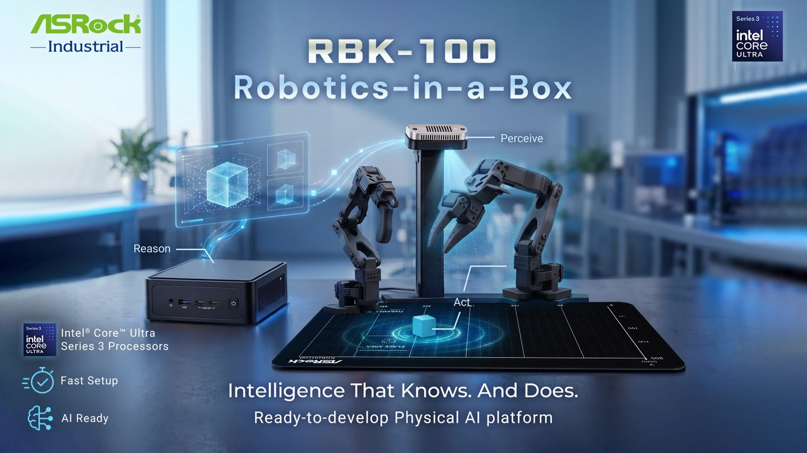

新闻 · 2026-11-25 08:00
东擎发布基于英特尔酷睿 Ultra X7 处理器 358H 的整合式物理 AI 开发平台
东擎联合英特尔发布基于酷睿 Ultra X7 358H处理器的RBK-100整合式物理AI开发平台，集成迷你主机、RGB-D摄像头、6轴机械手及AiRoboStarter软件，支持ACT与Pi0.5模型，标配32GB DDR5内存，高配版可选64GB，实现开箱即用的机器人开发。

来源与核验
单一信源报道，未交叉核实
东擎联合英特尔发布基于酷睿 Ultra X7 358H处理器的RBK-100整合式物理AI开发平台，集成迷你主机、RGB-D摄像头、6轴机械手及AiRoboStarter软件，支持ACT与Pi0.5模型，标配32GB DDR5内存，高配版可选64GB，实现开箱即用的机器人开发。

单一信源报道，未交叉核实